Avant de commencer
Pour toute l’équipeDaftar s’ouvre dans le navigateur, sur le PC de l’accueil, sur une tablette ou sur un téléphone. Chaque membre de l’équipe a son propre compte et choisit sa langue.
-
Le menu
Sur l’ordinateur, le menu est à gauche : Aujourd’hui, Agenda, Salle d’attente, Patients, Caisse, Rappels et Réglages. En haut : la recherche d’un patient (nom ou numéro) et le bouton Rendez-vous par téléphone.
Pour changer de langue, touchez Français ou العربية en haut de l’écran. En arabe, tout l’écran se lit de droite à gauche.
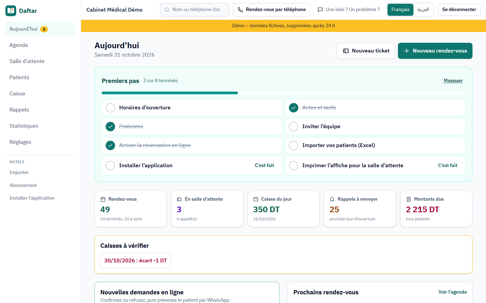
La page Aujourd’hui : les chiffres du jour et les prochains rendez-vous. -
Sur le téléphone
Le menu est en bas de l’écran : Aujourd’hui, Agenda, Salle, Patients.
Tout le reste est sous Plus : le rendez-vous par téléphone, la recherche d’un patient, la caisse, les rappels et les réglages.
Titulaire du cabinet Tout, y compris les réglages, l’équipe, les statistiques et l’export des données. Assistant(e) Agenda, salle d’attente, patients, caisse, rappels et import. Praticien(ne) Agenda, salle d’attente, patients, caisse et rappels. 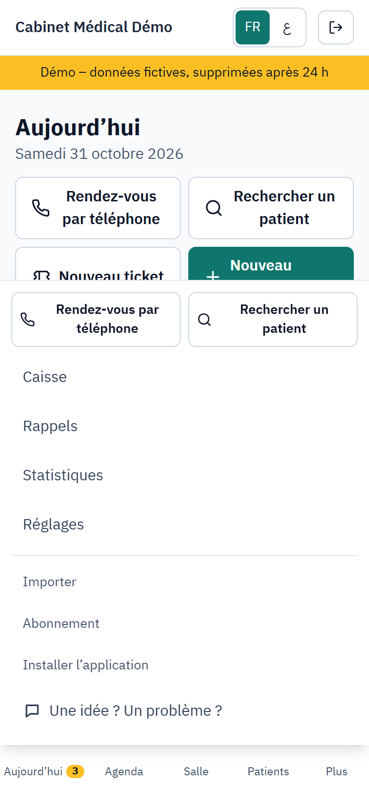
Le menu Plus ouvert.
Installer l’application
Pour toute l’équipe, sur chaque appareilDaftar s’installe comme une application, sans passer par un store : une icône sur l’écran d’accueil ou sur le bureau, et les mises à jour arrivent toutes seules. Une connexion Internet est nécessaire.
-
Ouvrez l’adresse de votre cabinet
Votre cabinet a sa propre adresse, par exemple cabinet-ben-salah.daftar.omarfourati.de. Ouvrez-la et connectez-vous avec votre e-mail et votre mot de passe.
Dans le menu, Installer l’application (sous Outils) montre les étapes pour votre appareil et un QR code pour les téléphones de l’équipe.
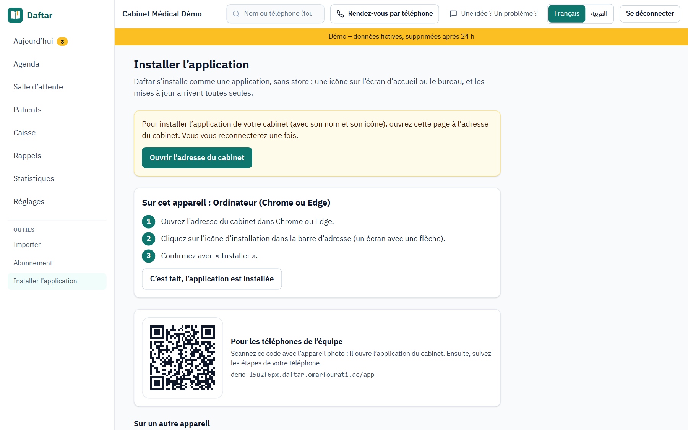
Les étapes s’adaptent à l’appareil utilisé. -
Android (Chrome)
Touchez le menu ⋮ en haut à droite.
Choisissez Installer l’application (ou Ajouter à l’écran d’accueil), puis confirmez.
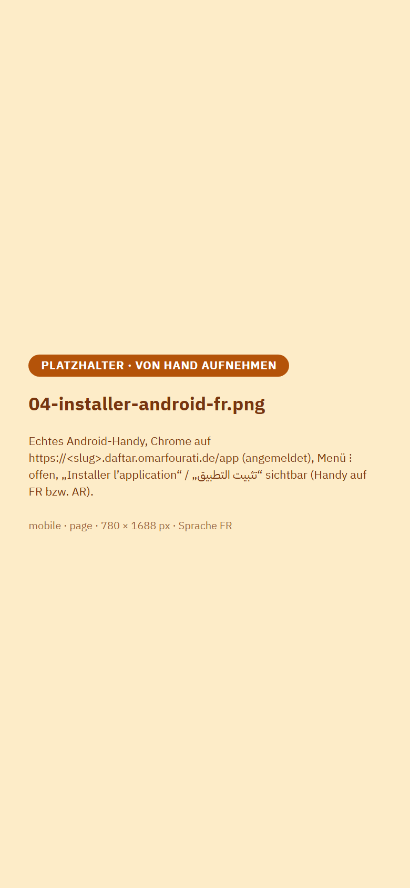
Le menu de Chrome sur Android. -
iPhone et iPad (Safari)
Touchez le bouton Partager, le carré avec une flèche vers le haut.
Choisissez Sur l’écran d’accueil, puis Ajouter.
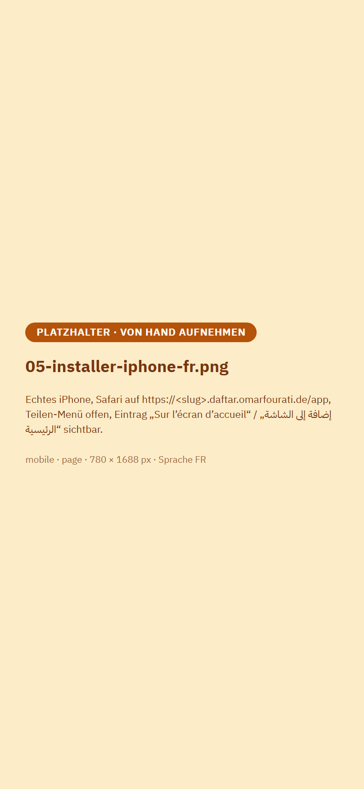
Le menu Partager de Safari. -
Ordinateur (Chrome ou Edge)
Cliquez sur l’icône d’installation dans la barre d’adresse (un écran avec une flèche), puis confirmez avec Installer. Daftar apparaît dans le menu Démarrer.
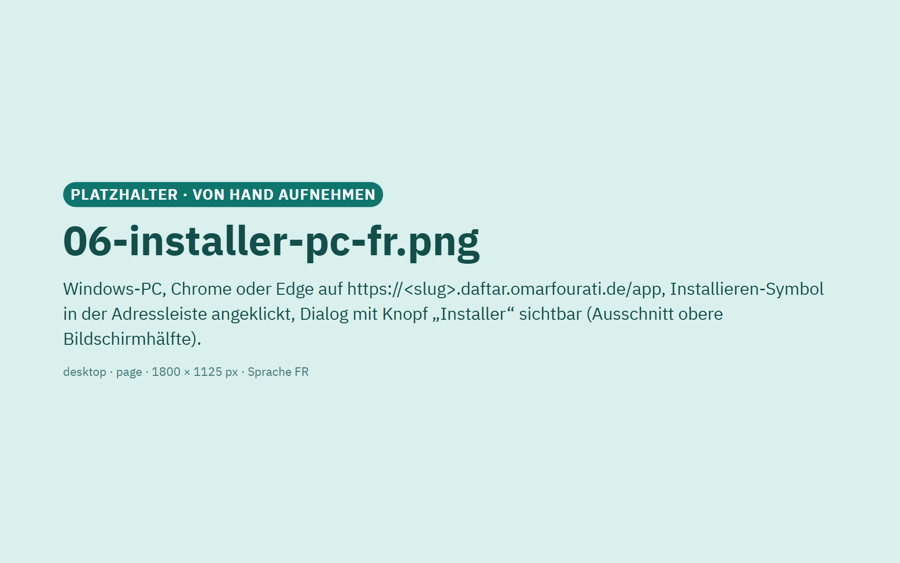
L’icône d’installation, à droite de l’adresse.
Astuce : ouvrez ensuite toujours Daftar par son icône. Sur la page Installer l’application, touchez C’est fait, l’application est installée pour cocher l’étape.
Premiers pas
Pour le titulaire du cabinet, une seule foisLa carte Premiers pas sur la page Aujourd’hui liste ce qu’il faut régler au début. Chaque ligne ouvre la bonne page et se coche toute seule une fois l’étape faite.
-
La liste des premiers pas
Touchez une ligne pour aller directement au bon réglage. Masquer cache la carte quand tout est prêt.
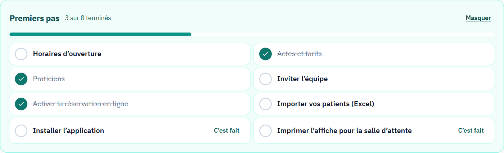
Huit étapes, des horaires jusqu’à l’affiche. -
Horaires d’ouverture
Réglages → Horaires & fermetures. Pour chaque jour, indiquez les plages horaires. Une pause = deux plages, par exemple 08:00–12:30 et 14:00–18:00.
Copier sur les autres jours reprend un jour pour toute la semaine. Puis Enregistrer les horaires.
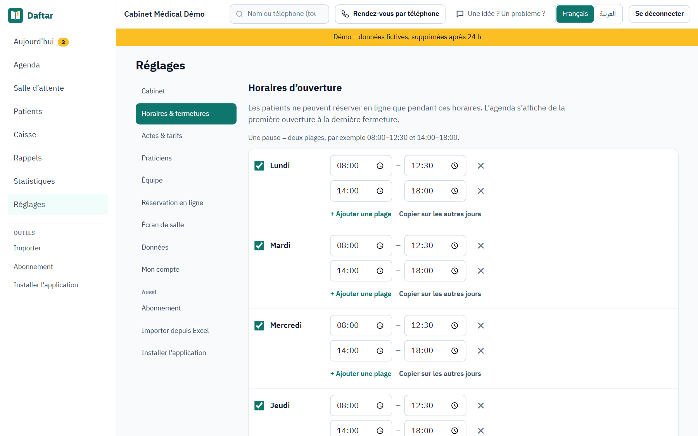
Les patients ne peuvent réserver en ligne que pendant ces horaires. -
Congés et jours fériés
Sous Fermetures exceptionnelles, choisissez Du, Au et le Motif (congés, Aïd, formation…), puis Ajouter la fermeture. Ces jours-là, ni rendez-vous ni réservation en ligne.
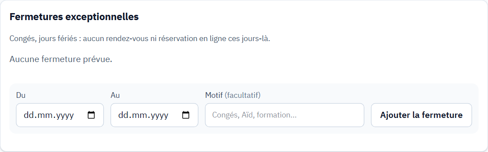
Daftar prévient si des rendez-vous sont déjà prévus ces jours-là. -
Actes et tarifs
Réglages → Actes & tarifs. Le catalogue de votre spécialité est déjà rempli. Pour chaque acte : la durée (elle donne la place dans l’agenda), le prix si vous le souhaitez, et En ligne si vos patients peuvent le réserver eux-mêmes.
Nouvel acte pour en ajouter un.
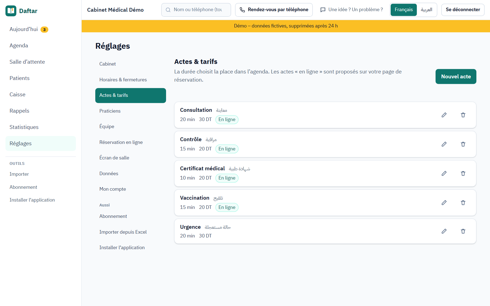
-
Praticiens
Réglages → Praticiens : les personnes qui reçoivent les patients. Chacun a sa colonne et sa couleur dans l’agenda. Un praticien n’a pas besoin de compte.
Nouveau praticien pour en ajouter un.
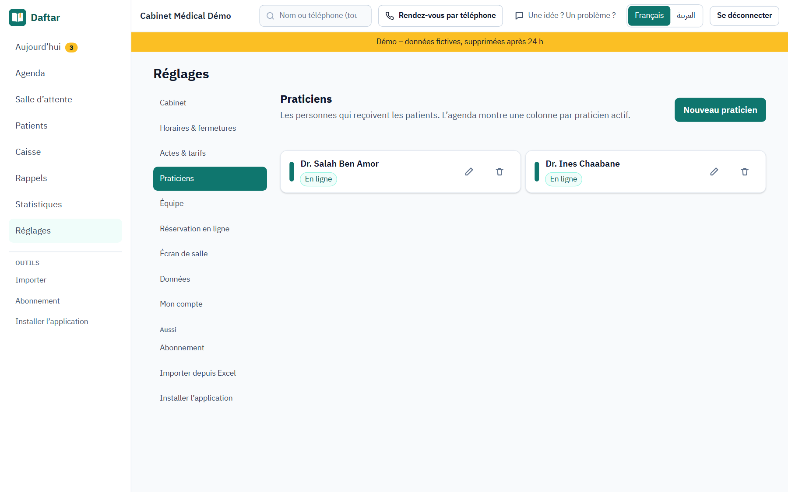
-
Inviter l’équipe
Réglages → Équipe, sous Inviter quelqu’un : choisissez le Rôle, puis Créer le lien d’invitation.
Envoyez le lien avec Envoyer par WhatsApp (ou Copier). La personne choisit elle-même son e-mail et son mot de passe. Le lien est valable 7 jours et ne s’affiche qu’une fois.
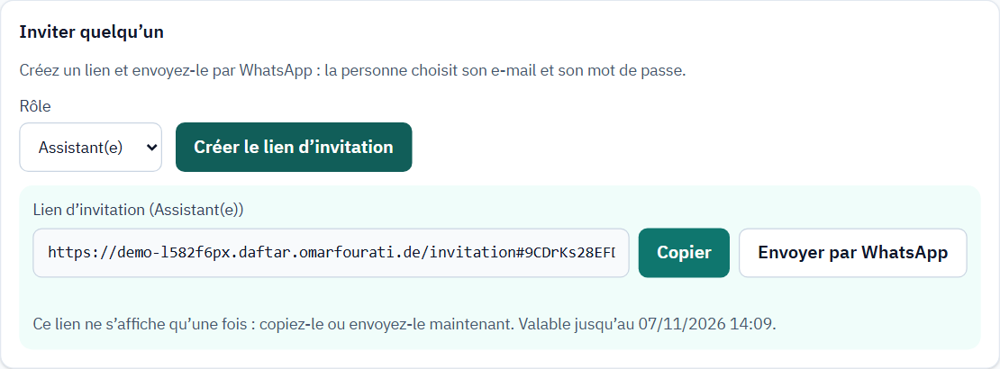
Dans la démo, le lien montre le principe mais ne crée aucun compte. -
Réservation en ligne
Réglages → Réservation en ligne. Cochez Réservation en ligne activée. Choisissez si les demandes sont confirmées automatiquement, le délai minimum avant un rendez-vous et le nombre de réservations par jour, puis Enregistrer.
En haut : l’adresse de votre page de réservation, à partager sur WhatsApp, Facebook ou Google Maps, et son QR code.
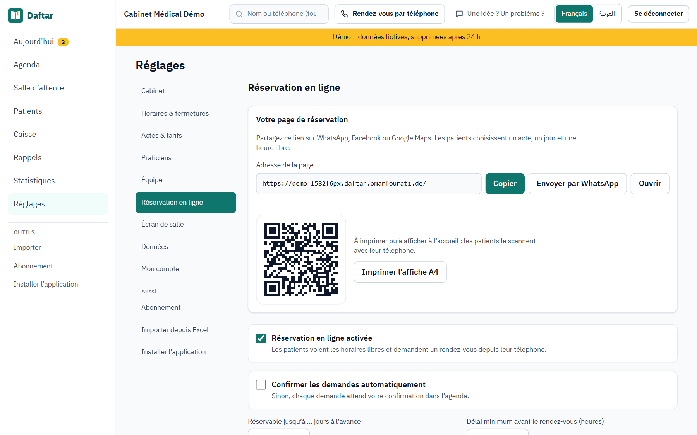
-
L’affiche pour la salle d’attente
Imprimer l’affiche A4 prépare une affiche en français et en arabe avec le QR code de votre page. Touchez Imprimer l’affiche.
Dans la fenêtre d’impression : format A4, marges « Aucune », et cochez « Graphiques d’arrière-plan ».
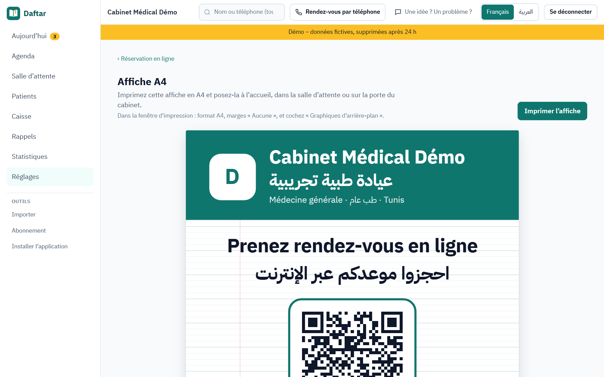
Mot de passe oublié ? Dans Équipe, le titulaire touche Mot de passe oublié à côté de la personne et lui envoie le lien (valable 24 heures).
Prendre un rendez-vous
Pour l’accueilDeux façons : au téléphone, Daftar propose tout de suite les prochains créneaux libres ; dans l’agenda, vous choisissez vous-même le jour et l’heure. Jamais deux rendez-vous en même temps pour le même praticien ou le même patient : Daftar le refuse.
-
Au téléphone : le numéro d’abord
Touchez Rendez-vous par téléphone en haut de l’écran (touche T sur l’ordinateur). Tapez le Numéro de l’appelant : les patients avec ce numéro s’affichent.
Choisissez le bon (une famille peut partager un numéro), ou Nouveau patient avec ce numéro.
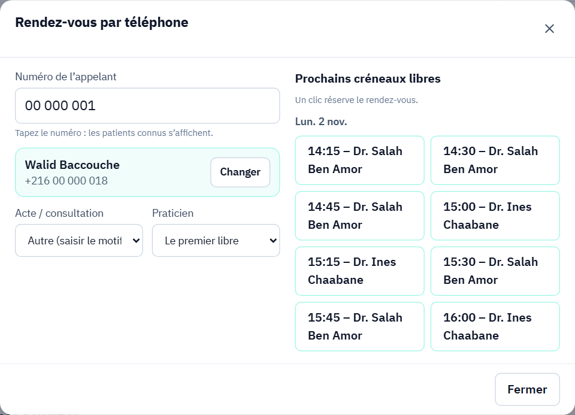
-
L’acte, puis un créneau libre
Choisissez l’Acte / consultation et, si besoin, le Praticien (sinon Le premier libre). À droite, les Prochains créneaux libres : un clic réserve le rendez-vous.
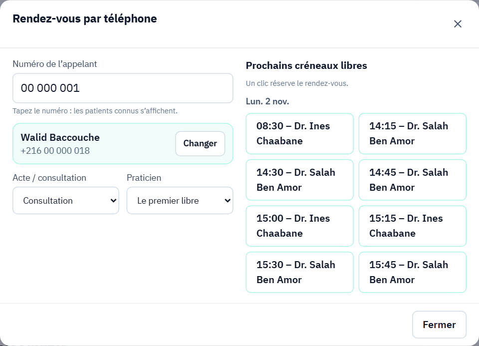
-
Le message de confirmation
Le rendez-vous est enregistré. Le Message de confirmation est prêt dans la langue du patient : Copier le texte, ou envoyez-le avec WhatsApp ou SMS. Autre appel pour le suivant.
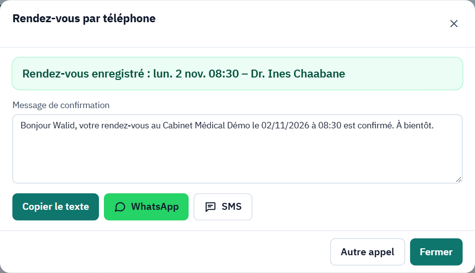
-
L’agenda
Ouvrez Agenda. Jour ou Semaine, les flèches pour changer de jour, Aujourd’hui pour revenir. Une colonne par praticien. Les demandes faites en ligne apparaissent en pointillés : En ligne, à confirmer.
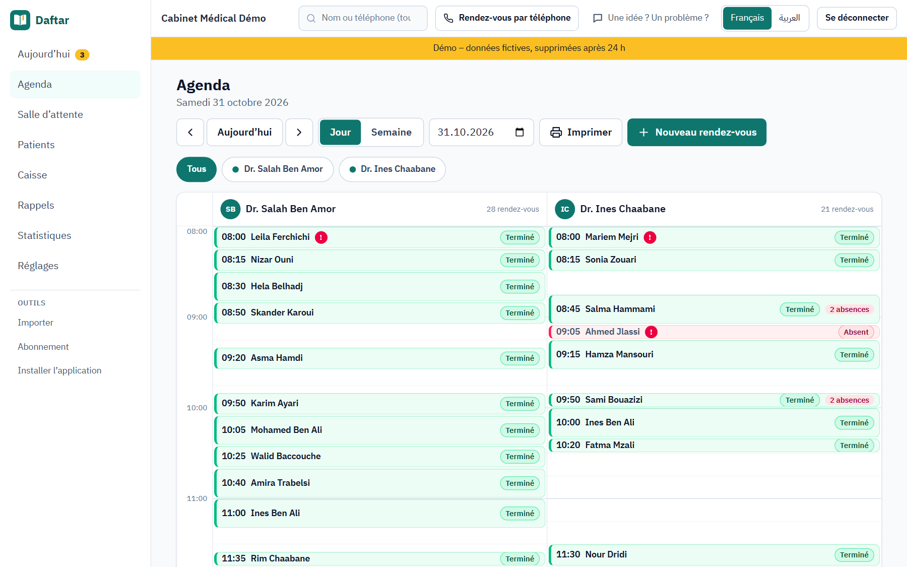
Couleur = statut : prévu, confirmé, arrivé, en consultation, terminé, absent. -
Nouveau rendez-vous dans l’agenda
Touchez un créneau libre, ou Nouveau rendez-vous (touche N). Cherchez le patient par nom ou téléphone, ou Nouveau patient. Choisissez l’acte : la durée se remplit seule.
Vérifiez Date, Heure et Praticien, puis Enregistrer le rendez-vous.
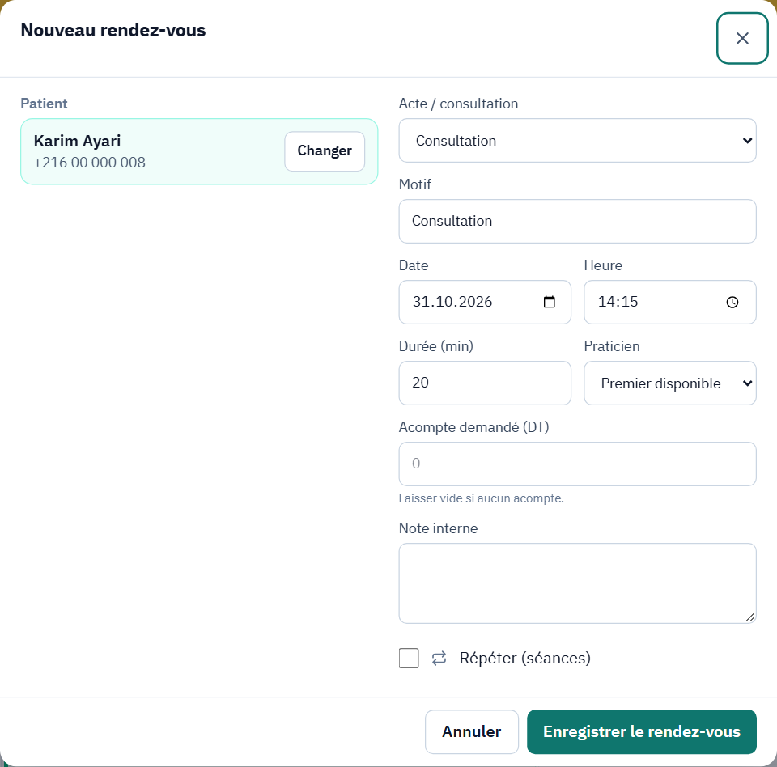
-
Créneau déjà pris ?
Daftar affiche Ce créneau est déjà pris. et propose les Prochains créneaux libres : touchez-en un, puis enregistrez.
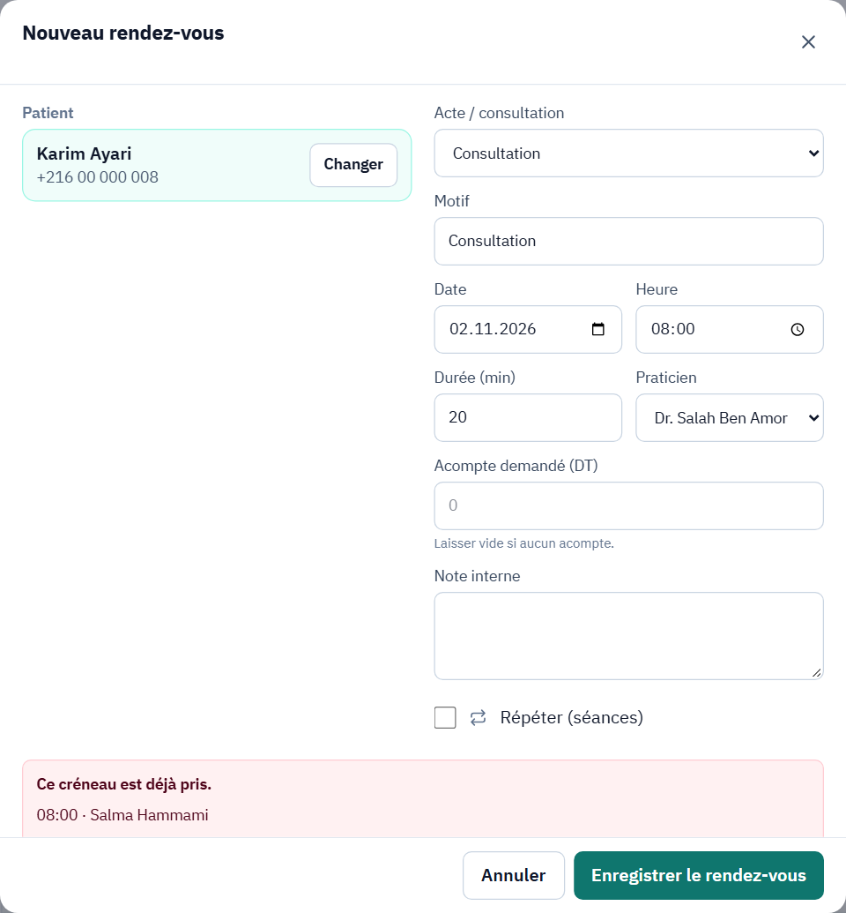
-
Sur le téléphone
L’agenda du jour s’affiche en liste. Touchez un rendez-vous pour l’ouvrir.
Le rendez-vous par téléphone se trouve sous Plus.
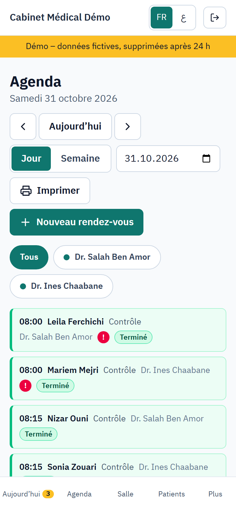
Séances régulières (kiné, psychologue…) : dans le rendez-vous, Répéter (séances), choisissez les jours et le nombre de séances, puis Vérifier les dates. Les dates déjà prises sont signalées avant d’enregistrer.
Accueil et salle d’attente
Pour l’accueil et le médecinÀ son arrivée, chaque patient reçoit un numéro de ticket, avec ou sans rendez-vous. L’écran de la salle et le téléphone du patient n’affichent que des numéros, jamais de nom.
-
Le patient arrive
Dans l’Agenda, touchez son rendez-vous, puis Arrivé. Il reçoit automatiquement un ticket dans la salle d’attente, dans l’ordre d’arrivée.
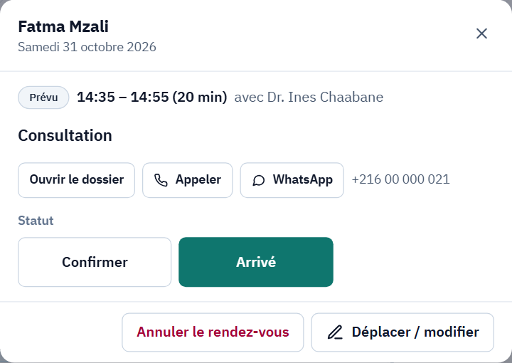
-
La salle d’attente
Le menu Salle d’attente montre qui est En consultation, Appelés et En attente, avec la position et l’attente estimée. À droite, ce que montre l’écran de la salle.
Touchez Appeler : le numéro s’affiche sur l’écran. Puis En consultation et Terminé. Parti si le patient est reparti.
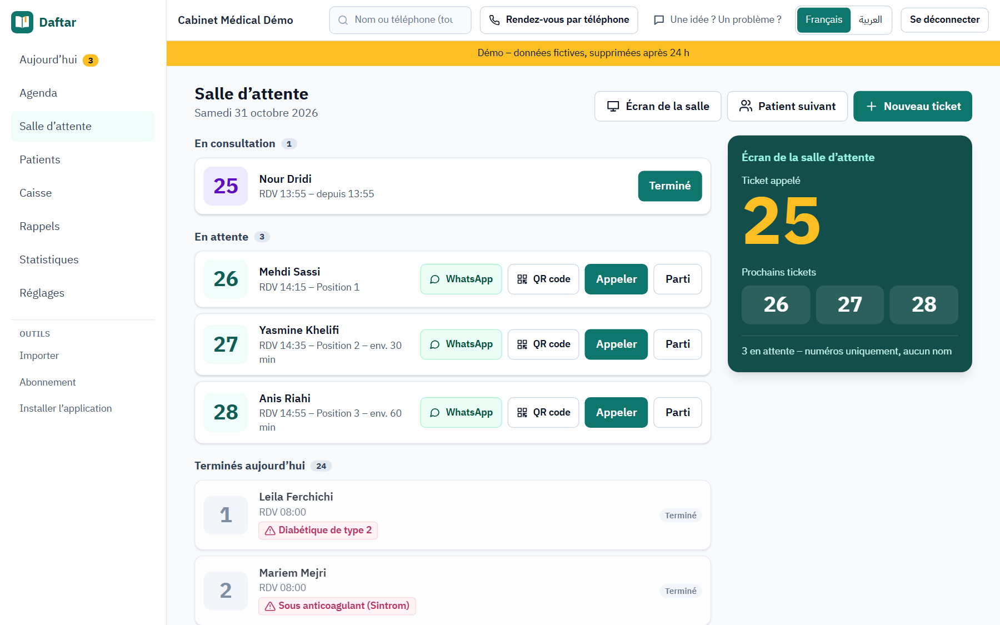
-
Un patient sans rendez-vous
Nouveau ticket : Patient du cabinet (recherche par nom ou numéro) ou Juste un nom, puis Donner le ticket.
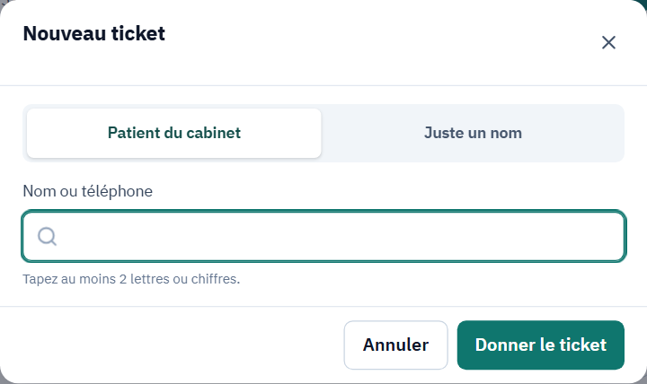
-
Le ticket sur le téléphone du patient
WhatsApp envoie au patient le lien de son ticket. Ou QR code : le patient prend le code en photo et suit son tour sur son téléphone.
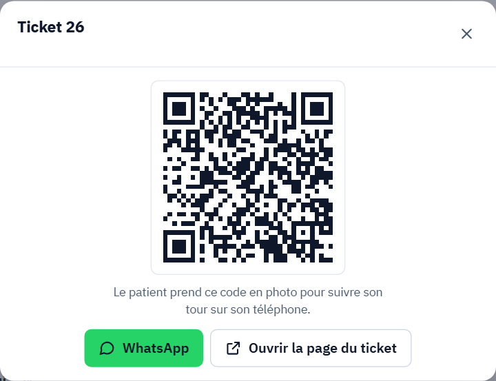
-
Patient suivant
Salle d’attente → Patient suivant : Maintenant, Ensuite et les patients En retard. Appeler le suivant appelle la bonne personne : le patient du rendez-vous s’il est là, sinon la première personne arrivée.
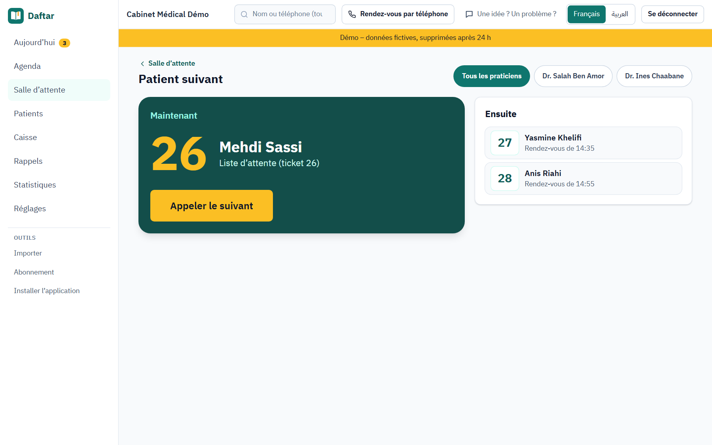
-
L’écran de la salle
Écran de la salle ouvre la page à afficher sur une télévision ou une tablette (l’adresse est aussi dans Réglages → Écran de salle). Touchez Plein écran. L’écran se met à jour tout seul.
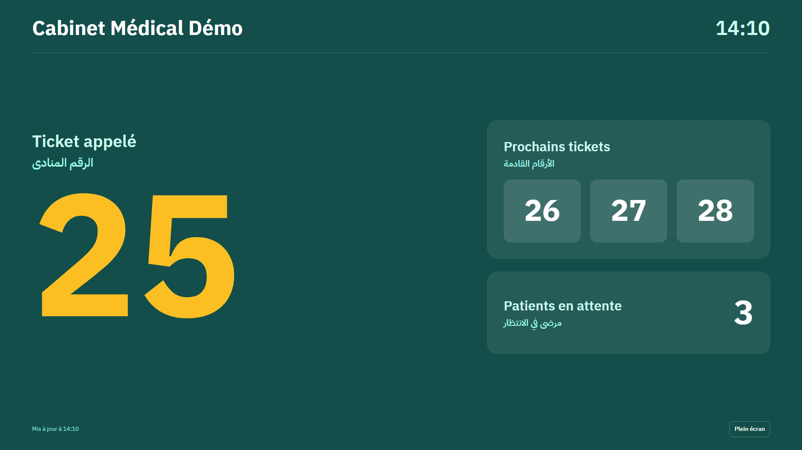
Uniquement des numéros, aucun nom. -
Ce que voit le patient
Son numéro, les Personnes avant vous et l’Attente estimée. La page se met à jour toute seule.
Quand c’est son tour : « C’est votre tour ! Présentez-vous à l’accueil. »
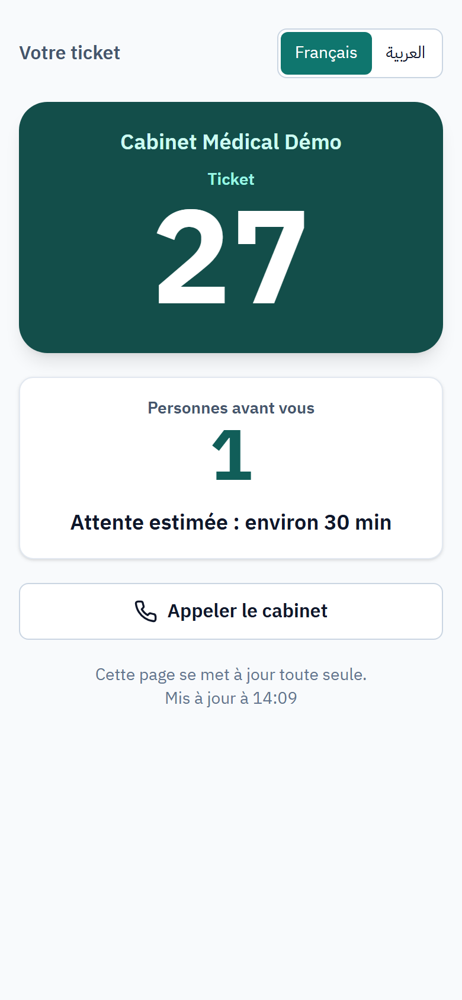
Non venus ? Sur Aujourd’hui, Daftar liste les rendez-vous passés sans arrivée notée : Absent ou Venu, en un clic. Les absences sont comptées dans le dossier du patient.
Caisse
Pour l’accueil – vérification par le titulaireDaftar enregistre les paiements que vous recevez (espèces, D17, Flouci, carte, chèque, virement) et calcule ce qu’il reste à payer. Il n’encaisse rien lui-même.
-
Les actes et le reste à payer
Ouvrez le dossier du patient (Patients ou la recherche en haut), onglet Actes et paiements. Acte ajoute un acte avec son prix.
Le Solde montre le Total des actes, ce qui est Payé et le Reste à payer.
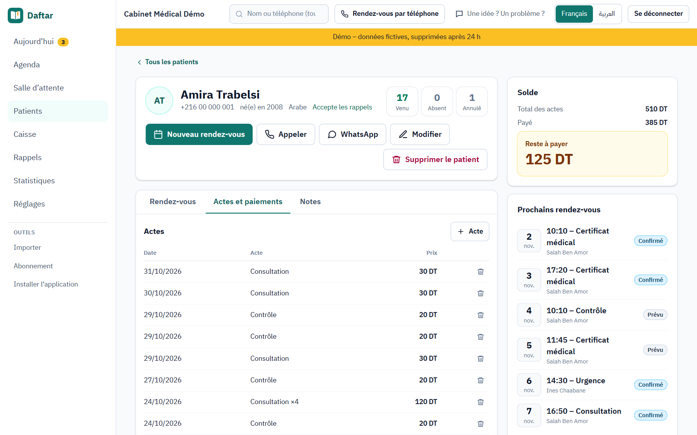
-
Encaisser un paiement
Touchez Paiement. Indiquez le Montant (DT) et le Mode de paiement, puis Enregistrer le paiement.
Paiement en plusieurs fois ? Enregistrez chaque versement le jour où il est payé : le reste à payer se met à jour.
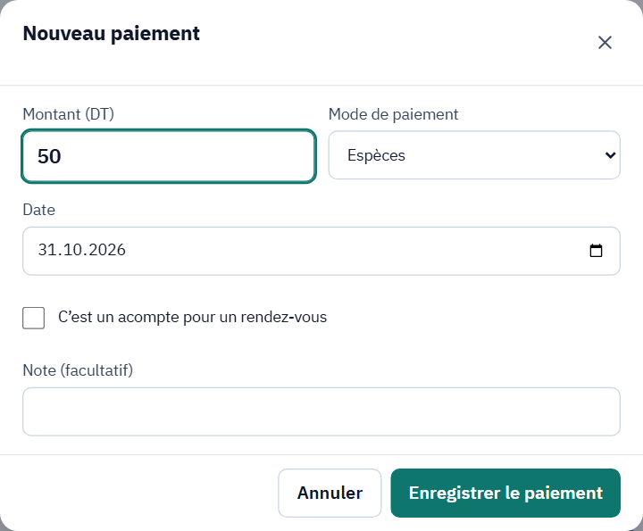
-
Le reçu
Dans la liste des paiements, Reçu ouvre un reçu à imprimer avec Imprimer.
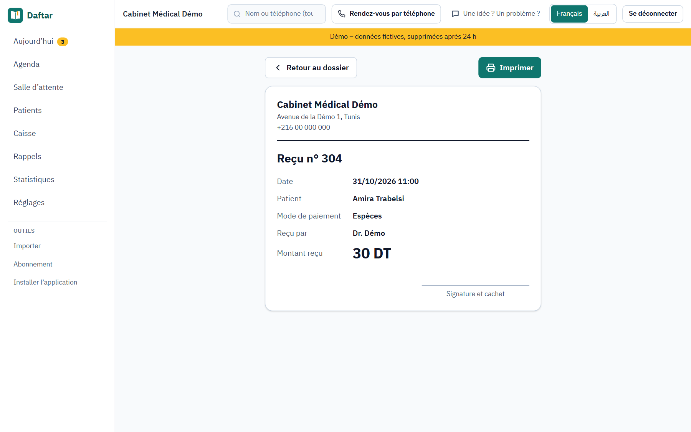
-
Acompte conseillé
Pour un patient déjà absent deux fois, le rendez-vous affiche « 2 absences : acompte conseillé. » Demander … inscrit le montant dans Acompte demandé (DT).
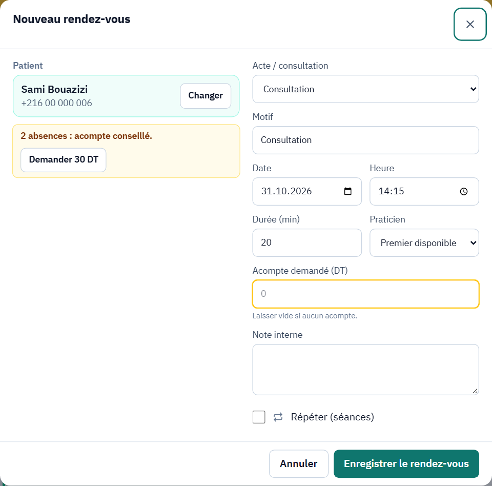
-
Encaisser l’acompte
Ouvrez le rendez-vous : Encaisser l’acompte enregistre le paiement, lié à ce rendez-vous. Dans un paiement, la case C’est un acompte pour un rendez-vous fait la même chose.
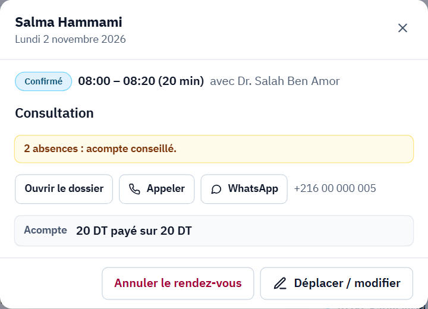
-
La caisse du jour
Menu Caisse : Encaissé ce jour, le total Par mode de paiement et les Paiements du jour. Les flèches changent de jour.
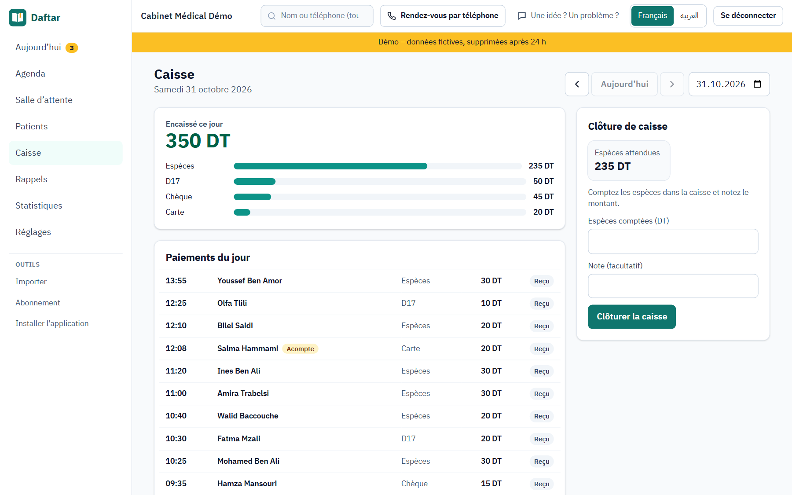
-
Les montants dus
Plus bas, Montants dus : les patients qui doivent encore de l’argent, du plus grand montant au plus petit, avec la date du dernier paiement.
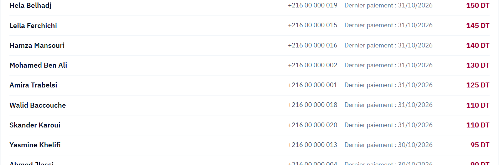
-
La clôture du soir
Comptez les espèces, notez le montant dans Espèces comptées (DT), puis Clôturer la caisse. Daftar affiche l’écart : La caisse est juste., Manque … ou Excédent …
Le titulaire vérifie ensuite avec Valider la clôture. Les jours à vérifier apparaissent sur sa page Aujourd’hui.
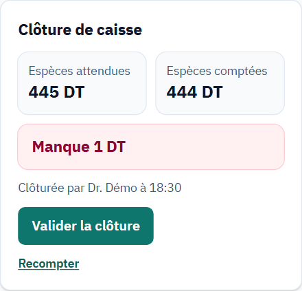
Rappels
Pour l’accueil, la veillePour chaque rendez-vous du lendemain, Daftar prépare le message de rappel dans la langue du patient. C’est vous qui l’envoyez, d’un clic, par WhatsApp ou SMS : rien ne part automatiquement.
-
Les rappels de demain
Menu Rappels : les rendez-vous de demain avec le message prêt. Touchez WhatsApp ou SMS : l’application s’ouvre avec le texte déjà écrit, il ne reste qu’à l’envoyer. Le rappel est alors noté Envoyé.
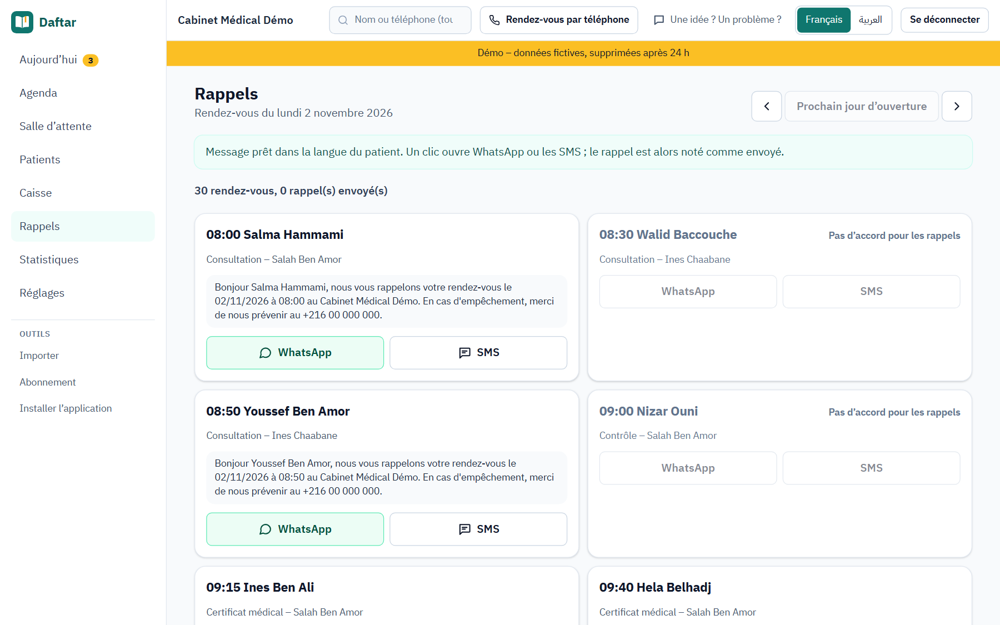
Dans la démo, rien n’est envoyé. -
Depuis le téléphone du cabinet
WhatsApp ou les SMS s’ouvrent directement sur le téléphone.
Les patients qui n’ont pas donné leur accord sont grisés : Pas d’accord pour les rappels.
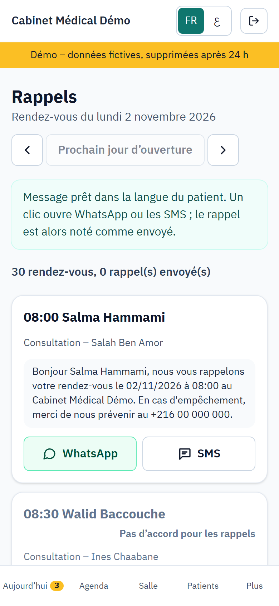
-
Modifier le texte
Réglages → Cabinet, partie Messages de rappel, en français et en arabe. Les mots entre accolades sont remplacés automatiquement : {patient} {date} {time} {practice} {phone}.
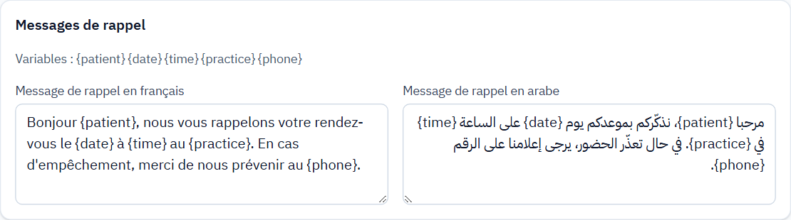
Importer une liste Excel
Pour le titulaire ou l’assistante, une fois au départVos patients ou vos rendez-vous sont dans Excel ? Daftar les reprend. Vous choisissez quelle colonne va où, et rien n’est enregistré avant la dernière étape.
-
Choisir le fichier
Importer (sous Outils, ou Réglages → Données). Choisissez Des patients ou Des rendez-vous, puis Choisir un fichier – ou déposez-le. Excel (.xlsx, .xls) ou CSV, 2 Mo au plus.
Si le classeur a plusieurs feuilles, choisissez la bonne et indiquez si la première ligne contient les titres, puis Continuer.
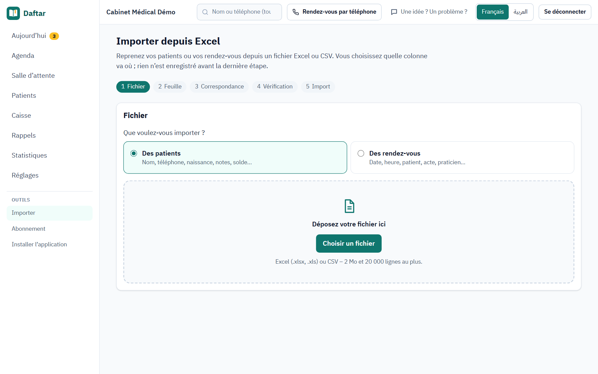
-
Correspondance des colonnes
Pour chaque information de Daftar (Nom, Prénom, Téléphone…), choisissez la colonne de votre fichier. Daftar propose déjà ce qui ressemble : vérifiez. Les champs obligatoires sont signalés. Puis Vérifier le fichier.
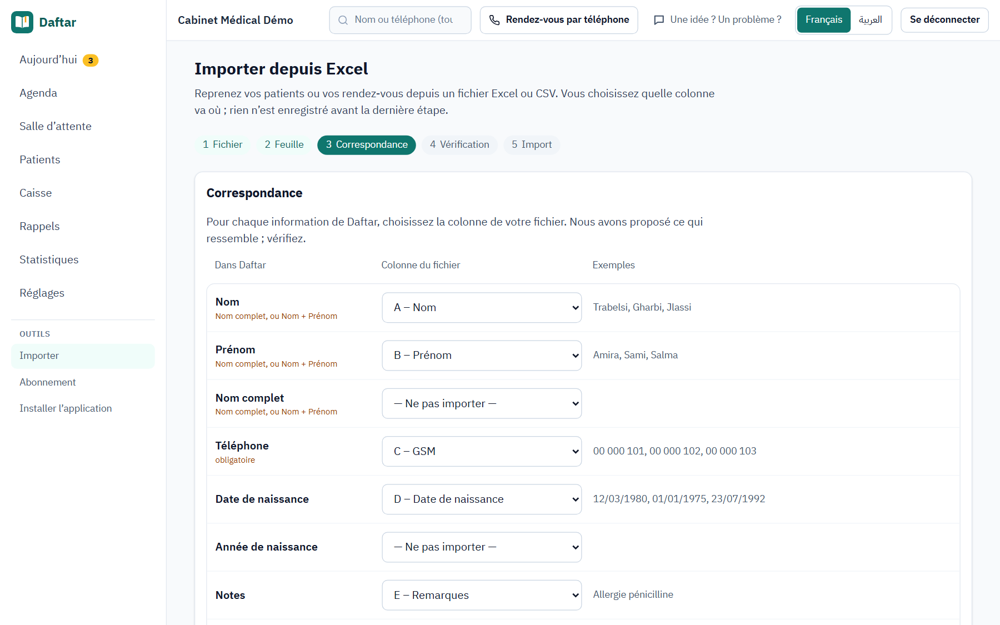
-
Vérification
Daftar montre ce que l’import ferait : lignes à créer, ignorées, en erreur, et les Lignes à corriger. Rien n’est encore enregistré. Importer … ligne(s) lance l’import.
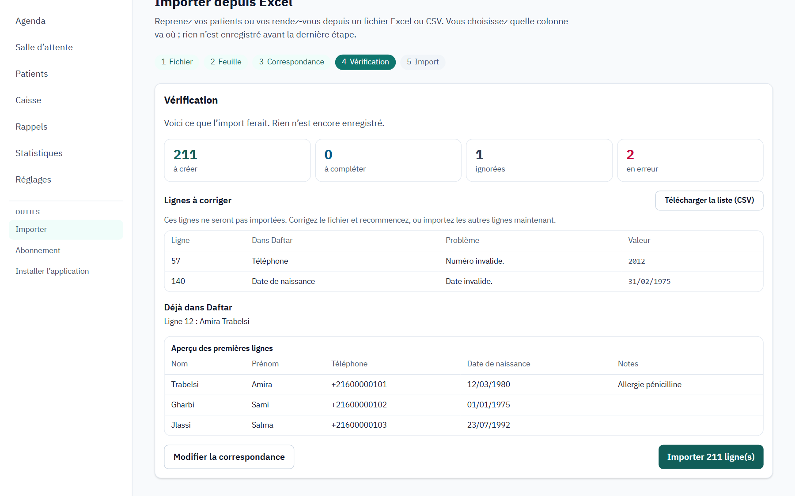
-
Import terminé
Télécharger le rapport (CSV) si besoin. Pour le prochain fichier du même genre : Garder cette correspondance pour le prochain fichier, donnez un nom, puis Enregistrer le modèle.
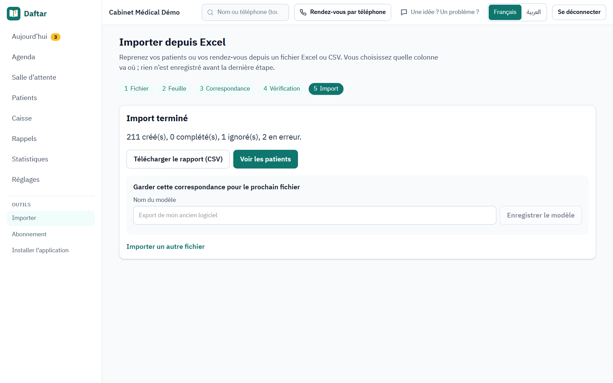
Dans la démo, l’import de fichiers n’est pas disponible. Dans votre cabinet, nous vous aidons volontiers au démarrage.
Patient déjà dans Daftar (même nom, prénom et téléphone) : choisissez Ignorer la ligne, Compléter la fiche existante ou Créer quand même un nouveau patient.
Réservation en ligne côté patient
Pour vos patients – à connaître à l’accueilVos patients réservent sur la page de votre cabinet, à toute heure et sans créer de compte, par exemple cabinet-ben-salah.daftar.omarfourati.de.
-
Choisir l’acte et l’heure
Le patient choisit l’Acte, le Praticien (ou Peu importe), le Jour et un Horaire, puis Continuer.
Seuls les horaires libres sont affichés.
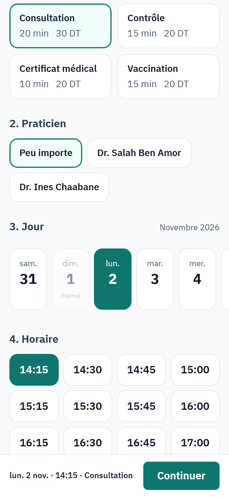
-
Ses coordonnées
Il indique Prénom, Nom et Téléphone, et peut demander un rappel la veille.
Puis Réserver ce rendez-vous.
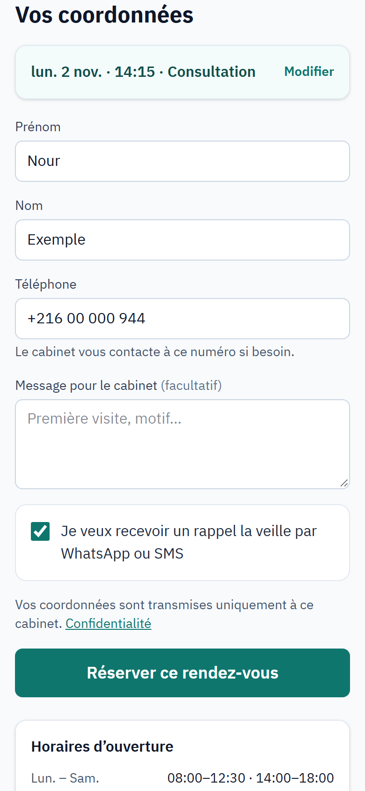
-
Son lien personnel
Demande envoyée (ou Rendez-vous confirmé si vous confirmez automatiquement).
Le patient garde son lien personnel : Copier ou Envoyer par WhatsApp, et Voir mon rendez-vous.
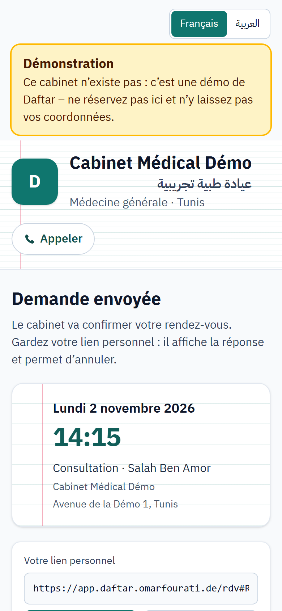
-
Annuler par le lien
Avec son lien, le patient touche Annuler ce rendez-vous, puis Oui, annuler. Le créneau est libéré pour un autre patient.
L’annulation en ligne est possible jusqu’au délai minimum que vous avez choisi ; ensuite, il appelle le cabinet.
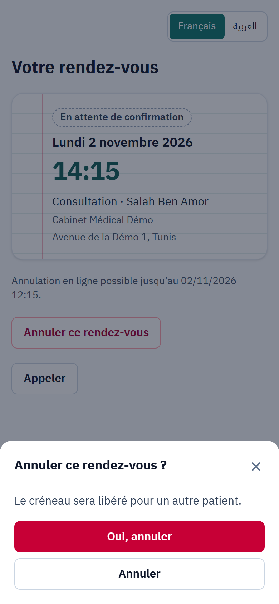
-
Au cabinet : confirmer la demande
Les demandes arrivent sur Aujourd’hui, sous Nouvelles demandes en ligne, et en pointillés dans l’agenda. Confirmer ou Refuser, puis Prévenir par WhatsApp : le texte est prêt.
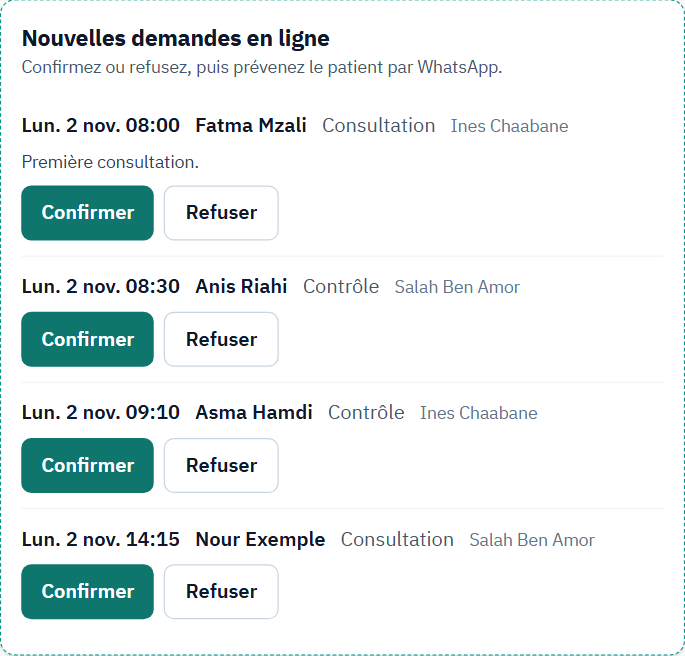
Absences répétées : un numéro qui a manqué plusieurs rendez-vous ne peut plus réserver en ligne (réglable dans Réservation en ligne) ; la page invite le patient à appeler le cabinet.